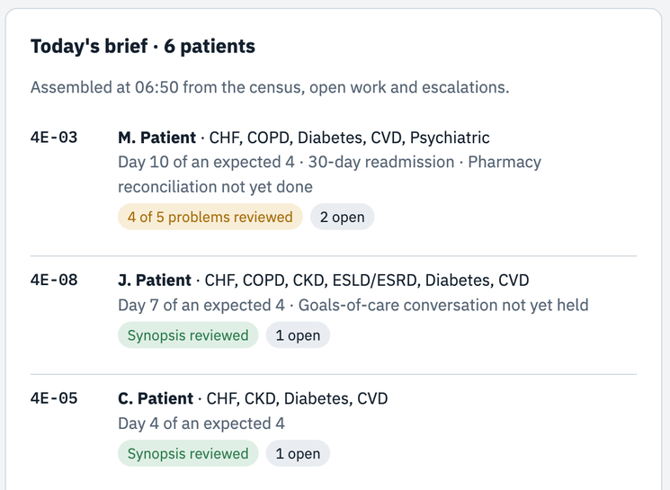

Juliana Operate
Our team embedded beside yours every day.
Best for: teams that want a partner in the daily work
Hospital medicine, practiced the way a primary care team practices primary care: the same team at every admission, so stays shorten and beds open.
One unit. About 850 patients. One team that knows every one of them.
Proven at a leading academic health system
See the resultsTheir care adds up across inpatient days, return admissions and coordination work, and spans many specialties and settings, so each admission starts the story again.
Discharge barriers build up when no single team owns the plan.
Transitions between hospital, home and post-acute care are where plans break down.
Each specialty sees one part of the patient, and history is gathered again at every admission.
A woman in her late 50s, medically fragile and repeatedly unable to stay in post-acute placements, was stuck in hospital. One team worked her medical, behavioral and placement needs in parallel, and she has stayed well since.
Read her storyYour team runs the program. Juliana brings the operating model, the know-how and the platform that keeps it running.
The five commitments behind the team
Teams change with each admission
One team that knows the patient

Juliana IQ assembles each patient's stay against the expected stay, the open work and what is still to review, before the huddle starts. It recommends; your team accepts, edits or declines.
See Juliana IQShown with synthetic patients.
Your clinicians run the program and make every clinical decision.
Our team embedded beside yours every day.
Best for: teams that want a partner in the daily work
Your team leads, with our expertise on call.
Best for: teams ready to lead
The people who built and ran the founding program, with a leadership team in product, go-to-market and operations, and advisors from health system and clinical leadership.
[Placeholder for a quote from Dr. Michael McCann: one or two sentences, in his words, on why one team for these patients matters.]

Former health system CEO, focused on operating models that improve clinical and financial outcomes.
Medical director of the founding program and a hospitalist trained in internal medicine and pediatrics. Designs the clinical model and trains partner teams to run it.

Chief Operating Officer at Hashed Health. Helped build Bramble Health (acquired by Turquoise Health) and SubPop Health (acquired by MedeAnalytics).
Tell us a little about your health system. We will set up a first conversation about how your team works today, with an opportunity snapshot for your hospital if you would like one.
We build it from public data and walk you through it in a 30-minute conversation, at no cost. Nothing is needed from your records.